DEAR LONGING
A Visual Exploration of the Inner Monologue
In Dear Longing, Perez presents a series of figurative paintings that investigate the quiet, complex terrain of the inner monologue. Centered on the human form, each portrait becomes a vessel for emotion, capturing fleeting thoughts, suppressed desires, and the intimate dialogue we hold with ourselves.
Her figures are rendered with sensitivity and restraint, often suspended in moments of stillness or introspection. Subtle symbolic elements appear throughout the series as quiet metaphors that hint at deeper psychological or emotional states. These motifs do not illustrate, but rather echo the feelings behind each gaze, each pose, each brushstroke.
Rooted in a personal yet universal inquiry, Dear Longing reflects the artist’s ongoing exploration of identity, vulnerability, and transformation. Through this work, she invites viewers to look at the subjects and listen to what they are not saying.

 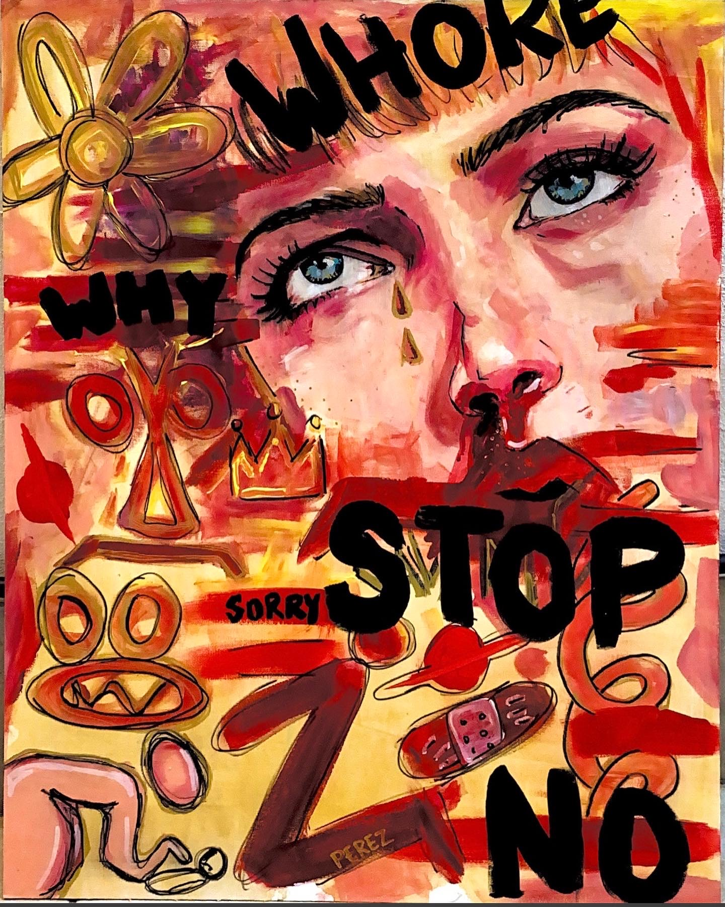
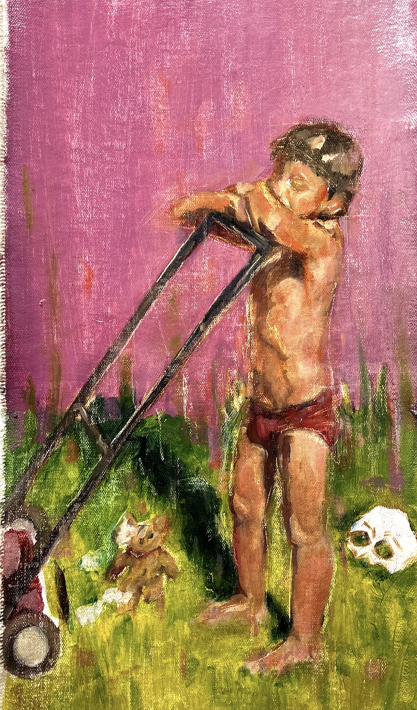
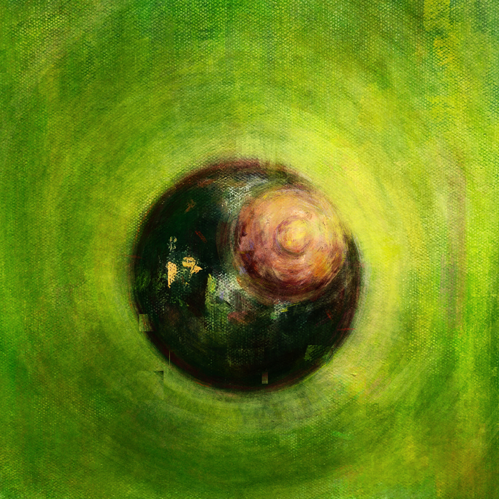
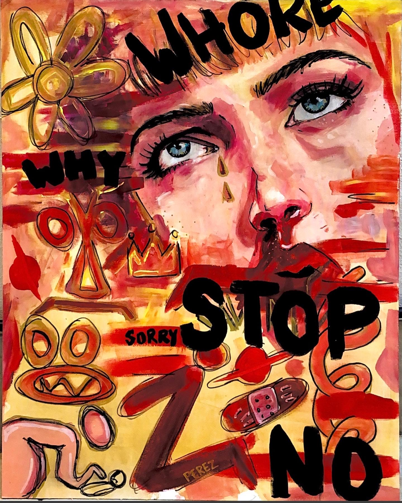
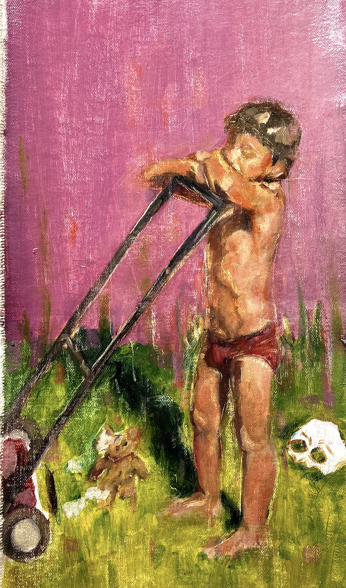
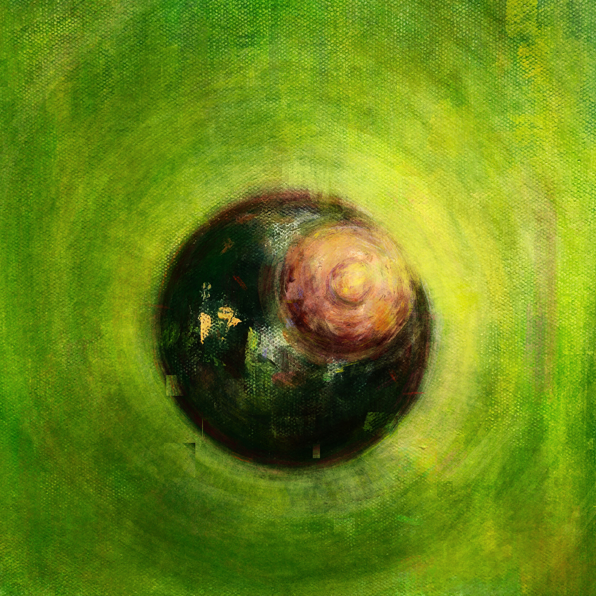
SKETCHES
Fragments of Process, Thought, and Observation
For Paola Perez-Bryan, sketching is not merely preparatory—it is a vital part of her artistic voice. These drawings capture moments of reflection, observation, and spontaneous emotional response. They are fragments of a process that often speak with as much clarity as finished works.
Ranging from delicate studies of the human form to raw visual thoughts, her sketches offer a window into the artist’s internal world—revealing gesture, instinct, and vulnerability in their most immediate form. Some explore symbolic elements; others are explorations of posture, facial expression, or emotional rhythm.
These works stand on their own, each one a moment of visual clarity that reveals the foundational role drawing plays in Perez-Bryan’s multidisciplinary practice.
 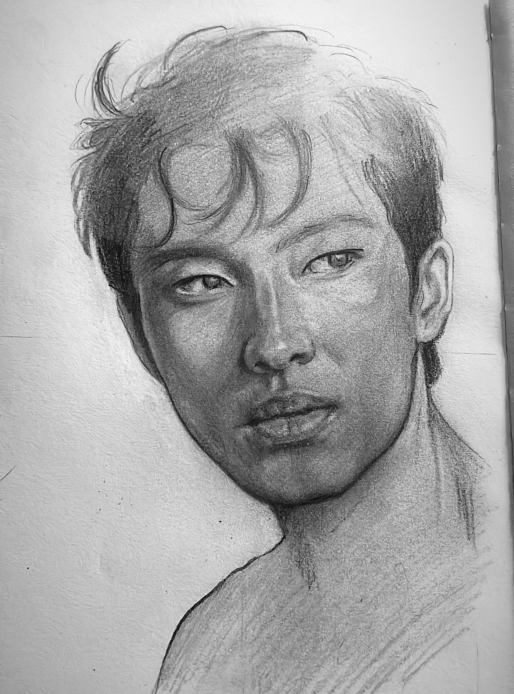
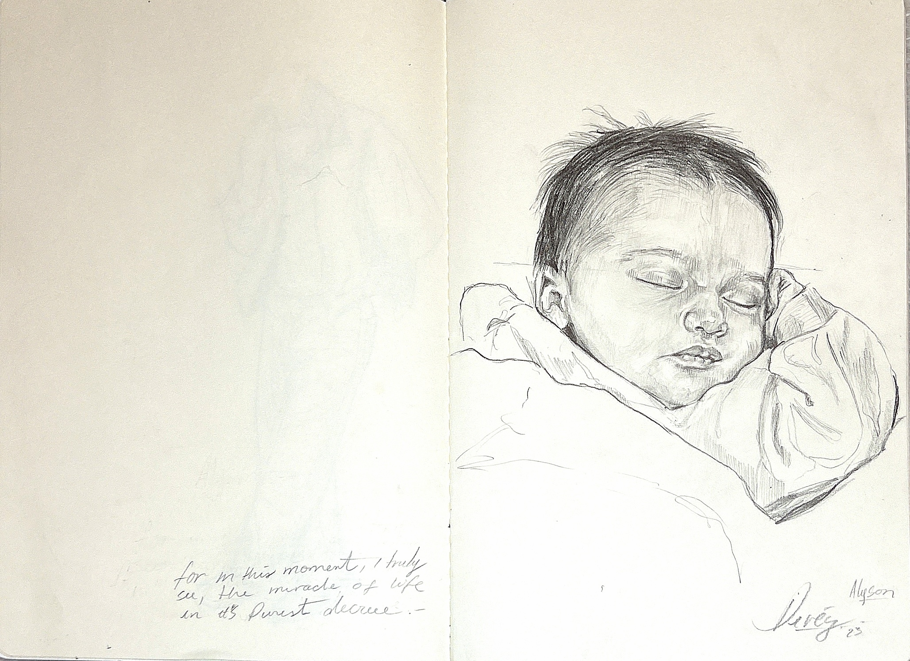
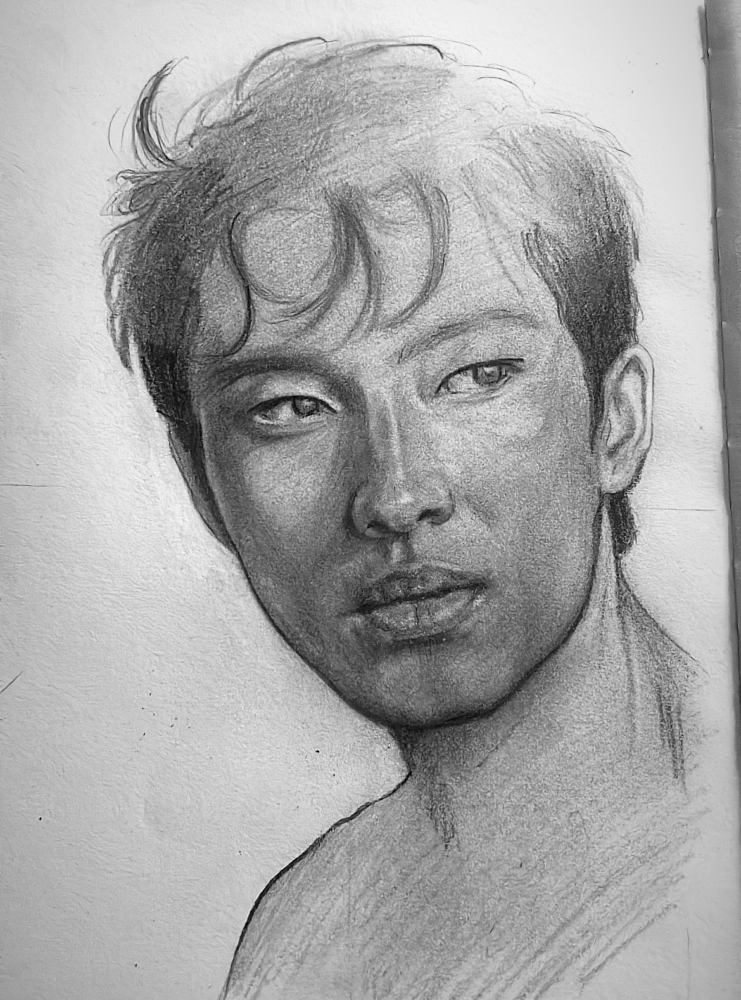
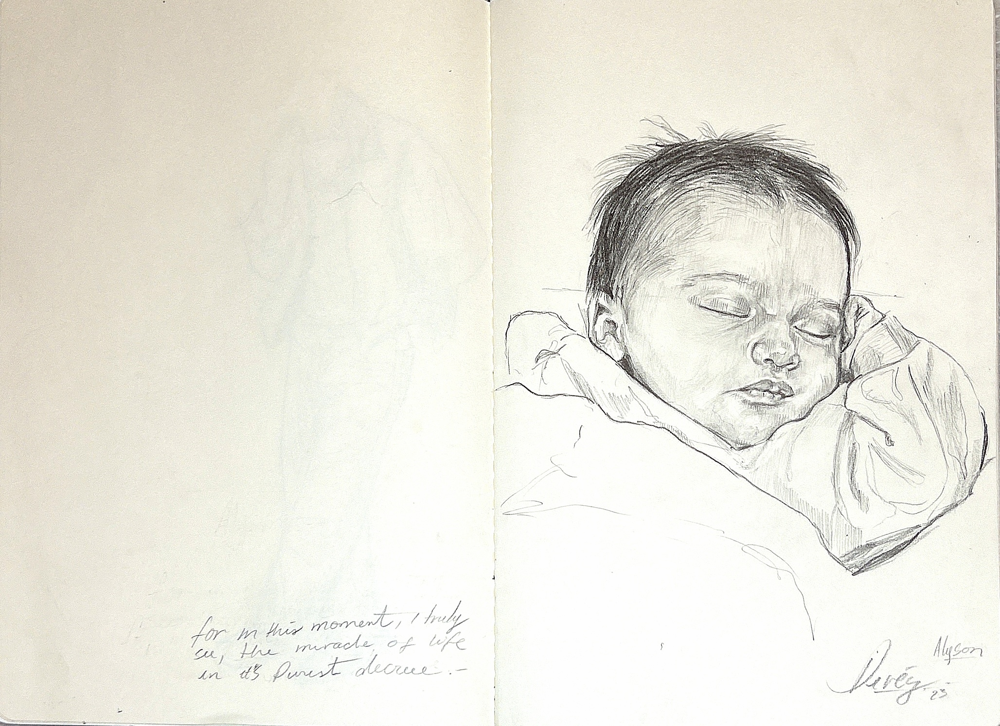

CALLIGRAPHIC SKETCHES
Visual Language as Inner Dialogue
In this series, Paola Perez-Bryan fuses figurative drawing with a calligraphic language of her own invention—a cryptic, evolving script that wraps around and weaves through each composition. Appearing at times playful, at times confessional, this symbolic writing reflects the artist’s internal monologue, captured not through conventional narrative but through a visual stream of consciousness.
Rather than seeking to be immediately understood, these inscriptions act as layered emotional code—teasing the viewer with glimpses of meaning while deliberately resisting full translation. What appears at first as abstract mark-making gradually reveals the structure of thought: humorous, fragmented, self-reflective, and deeply human. Some phrases echo private sentiments, others obscure fleeting reactions or internal dialogues that only unfold with time.
Perez-Bryan’s calligraphy transforms language into texture, creating a meditative space where word and image coexist without hierarchy. By embedding these visual riddles into her sketches, she invites the viewer not only to look, but to decipher, to pause, and to contemplate the invisible forces behind expression.
 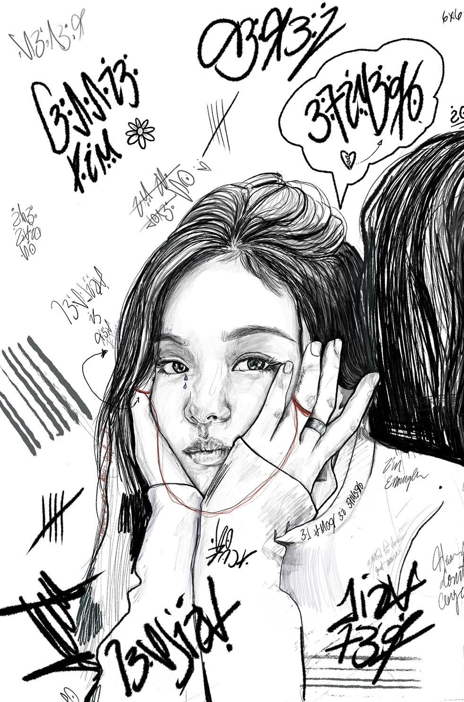
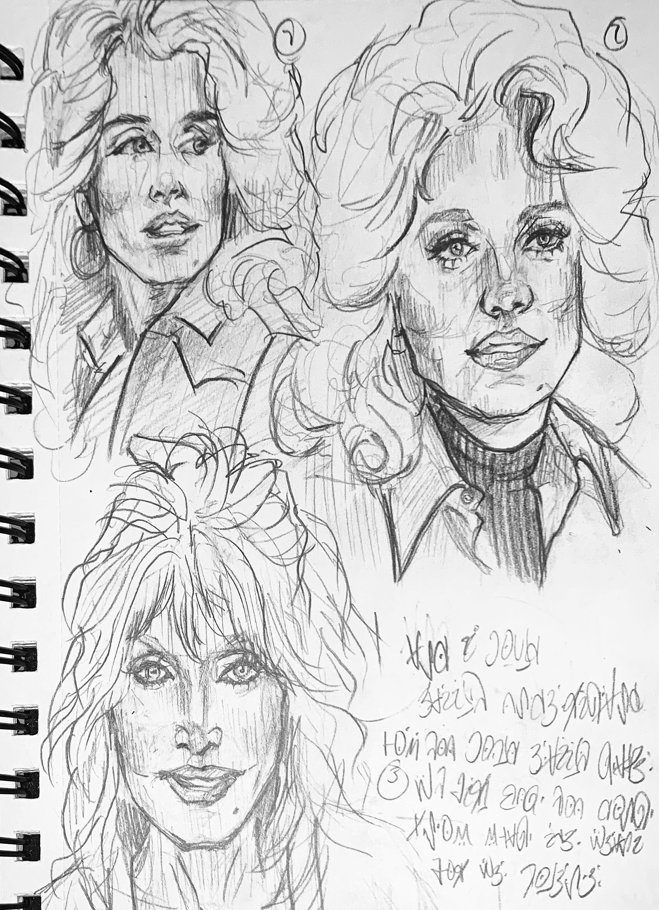
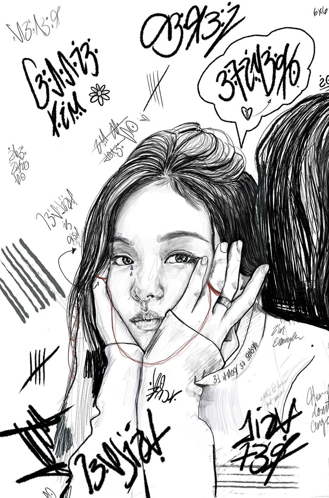
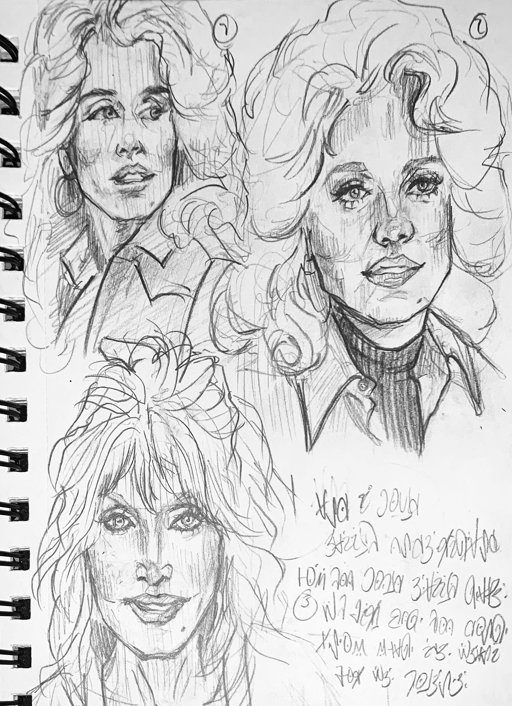